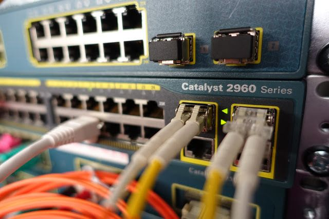

Letest Projeck


Fresh graduate IT dengan keahlian jaringan berbasis Cisco. Terampil dalam konfigurasi router/switch, VLAN, routing, dan troubleshooting jaringan. Cepat belajar dan siap bekerja di bidang infrastruktur jaringan.
About MeSaya memiliki kompetensi Cisco Certified Network Associate (CCNA), sebuah sertifikasi internasional yang membuktikan kemampuan dalam merancang, mengonfigurasi, dan mengelola jaringan komputer. Melalui sertifikasi ini, saya menguasai konsep dasar hingga menengah seperti routing, switching, VLAN, NAT, DHCP, serta pengamanan jaringan dasar.
Download CVKemampuan dalam konfigurasi router & switch Cisco, VLAN, routing, subnetting, serta troubleshooting jaringan sesuai standar CCNA.
Rad MoreKeahlian dalam konfigurasi perangkat Juniper, routing, switching, dan troubleshooting jaringan menggunakan Junos OS.
Rad MoreMenguasai dasar-dasar keamanan siber, termasuk identifikasi ancaman, analisis risiko, dan penerapan langkah perlindungan sistem serta jaringan.
Rad More